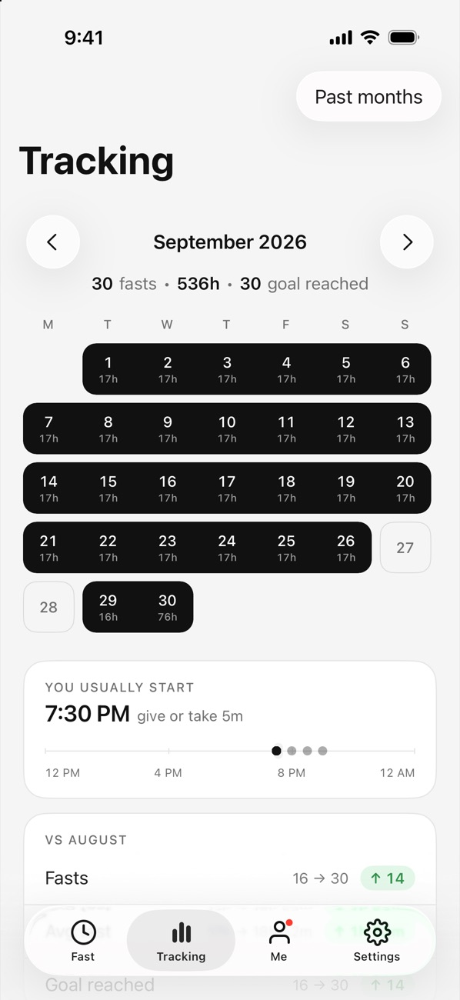
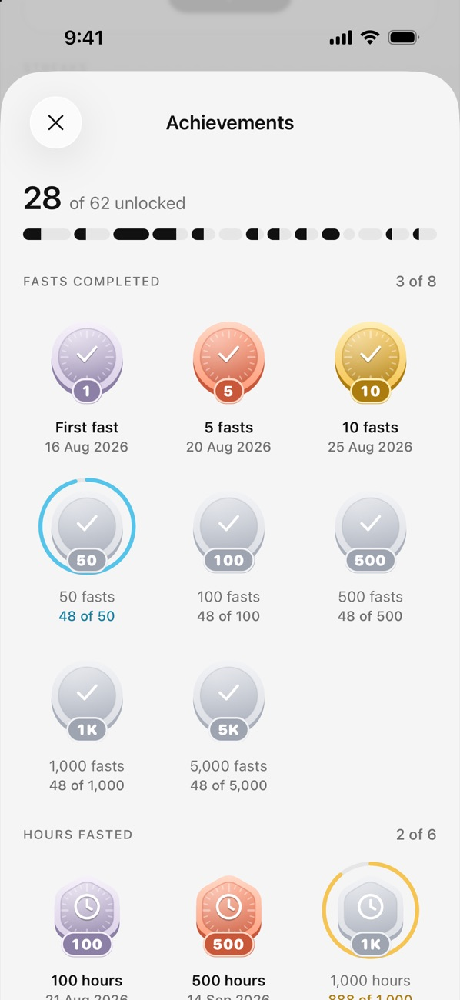
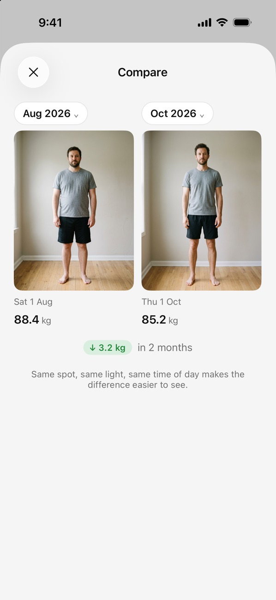
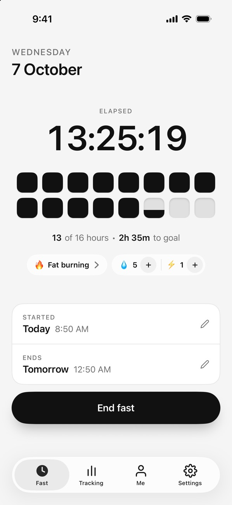
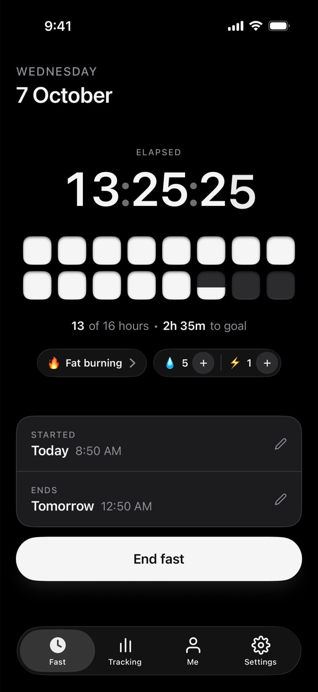
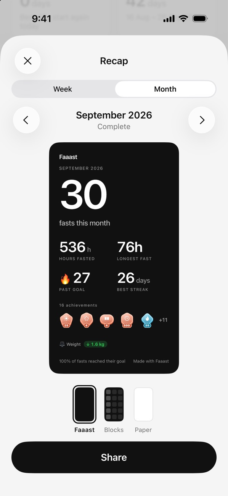

Choose your schedule.
Pick a fasting schedule or set your own duration. Started your timer late? You can adjust the start time.
Intermittent fasting, made simple.
Track your fasts, see your progress and build a routine that fits your life. Faaast keeps everything simple, with visual timers, progress tracking and no account required.


Start in a tap.
See your progress.
Find your rhythm.
Keep your data private.
How it works
Simple from the first tap.
Pick a fasting schedule or set your own duration. Started your timer late? You can adjust the start time.
Watch each hour fill a block, or choose another timer view. Your elapsed time and goal stay easy to see.
End your fast when you’re ready. Each session appears in your calendar, so you can review your history and spot patterns over time.
Why Faaast
Open the app, choose your schedule and start your timer. No account to create and no ads to interrupt you. Why no account
Review your fasting history, spot patterns and celebrate milestones along the way.
Adjust your start time, choose a different goal or end your fast whenever you need to. Returning after a break? Your history is ready when you are. 16:8, explained
Faaast isn’t a medical app. If you’re pregnant or breastfeeding, under 18, have had an eating disorder, or take medicine that lowers blood sugar, talk to a doctor before fasting.
Your fasting history
See every fast on your calendar, spot patterns and compare your progress over time. Whether you’re finding your rhythm or returning after a break, your history is ready when you are.
Features
Personal statistics
See your average fast, total hours and fasting history in one place. Add Pro to view your weight trend alongside your goal.
Achievements
Celebrate your first fast and the milestones that follow, with 62 badges to discover as you build your routine.
Widgets
See your timer on your Home Screen or Lock Screen. Use the interactive widget to start or end a fast with a tap.
Progress photos
Keep a visual record with weekly or monthly photos. Use the alignment guide to make comparisons easier, and protect your photos with Face ID. Daily photos are available with Pro.

Light and dark mode
Follow your iPhone’s light or dark setting and choose an app icon to match your style.


Recaps
Review your weekly and monthly fasting activity in a simple recap. Save it for yourself or share it if you choose.

Timer styles
Choose a timer that makes your progress easy to follow, from visual hour blocks to a simple dial or flip clock.
Free: Hour blocks, Ticks, Gauge, Filling disc and Digital.
Pro: Flip clock, Countdown and Departure board.
Privacy
No account to create. No ads to interrupt you. Your fasting history, weight and photos stay on your iPhone, with optional backup to your own iCloud through Pro.
Moving from another app? Import your fasting history from a compatible CSV or JSON file. Export your data whenever you choose.
Free and Pro
Track your fasts, build your history and celebrate milestones for free. Add Pro for hydration tracking, fasting stage information, weight trends, Apple Health integration and automatic iCloud backup.
| Feature | Free | Pro |
|---|---|---|
| Timer styles | Five styles | All eight styles |
| Calendar, statistics and milestones | Included | Included |
| Widgets and recaps | Included | Included |
| Weight logging | Included | Included |
| Progress photos | Weekly or monthly | Daily also available |
| Fasting stage information | — | Included |
| Water and electrolyte logging | — | Included |
| Weight chart and Apple Health sync | — | Included |
| Automatic iCloud backup | — | Included |
Upgrade to Pro inside the app. Prices shown in euros; the App Store displays your local price. Subscriptions renew automatically unless cancelled at least 24 hours before the end of the current period. Manage or cancel in your App Store account settings. Lifetime is a one-time purchase.
Faaast is an intermittent fasting tracker for iPhone. Use it to time your fasts, review your history and follow your progress with calendars, milestones and optional weight and photo tracking.
Yes. Fasting timers, your calendar, statistics, weight logging, widgets, badges, recaps and weekly or monthly progress photos are free to use, with no time limit. Pro adds the features listed above.
No. Open the app and start tracking. Your fasting history, weight and photos stay on your iPhone, with optional backup to your own iCloud through Pro.
They describe how long you fast. 16:8 is 16 hours without food and an 8-hour window to eat. 18:6 and 20:4 work the same way. OMAD means one meal a day, which is about 23 hours of fasting. Faaast also has 12:12, 14:10, 36 hours, or any length you set. More in our guide: 16:8 intermittent fasting, explained.
Yes, if your previous app exports a compatible CSV or JSON file. In Faaast, go to Settings → Your data to import your fasting history. You can export your data from the same place.
On your iPhone, go to Settings → your name → Subscriptions and select Faaast. Cancel before the renewal date to stop future charges. The Lifetime option is a one-time purchase.
No. Fasting stages are typical timings, and everyone is different. Don’t fast without medical advice if you’re pregnant or breastfeeding, under 18, have had an eating disorder, or take insulin or other glucose-lowering medication. More in our guide: What happens when you fast.
Need more help? hi@arecon.eu
Simple tracking. Visible progress. No account required.
Three a’s. One simpler fasting routine.